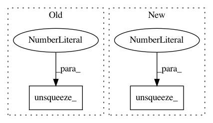

0d71a7f9e0fdabca092d632e3a14b8a1faecdd08,face_alignment/api.py,FaceAlignment,get_landmarks_from_image,#FaceAlignment#,133
Before Change
d[3] - d[1]) / self.face_detector.reference_scale
inp = crop(image, center, scale)
inp = torch.from_numpy(inp.transpose(
(2, 0, 1))).float().div(255.0).unsqueeze_(0)
inp = inp.to(self.device)
After Change
if pts[i, 0] > 0:
heatmaps[i] = draw_gaussian(
heatmaps[i], pts[i], 2)
heatmaps = torch.from_numpy(
heatmaps).unsqueeze_(0)
heatmaps = heatmaps.to(self.device)
depth_pred = self.depth_prediciton_net(
In pattern: SUPERPATTERN
Frequency: 3
Non-data size: 2
Instances
Project Name: 1adrianb/face-alignment
Commit Name: 0d71a7f9e0fdabca092d632e3a14b8a1faecdd08
Time: 2018-10-05
Author: adrian.bulat@wsc-1802-2.seri.co.uk
File Name: face_alignment/api.py
Class Name: FaceAlignment
Method Name: get_landmarks_from_image
Project Name: PIQuIL/QuCumber
Commit Name: 7da71b22f18f5d02ca57a8e5cb5ae47338ae8a31
Time: 2019-12-19
Author: emerali@users.noreply.github.com
File Name: qucumber/rbm/purification_rbm.py
Class Name: PurificationRBM
Method Name: gamma_plus
Project Name: PIQuIL/QuCumber
Commit Name: 7da71b22f18f5d02ca57a8e5cb5ae47338ae8a31
Time: 2019-12-19
Author: emerali@users.noreply.github.com
File Name: qucumber/rbm/purification_rbm.py
Class Name: PurificationRBM
Method Name: gamma_minus